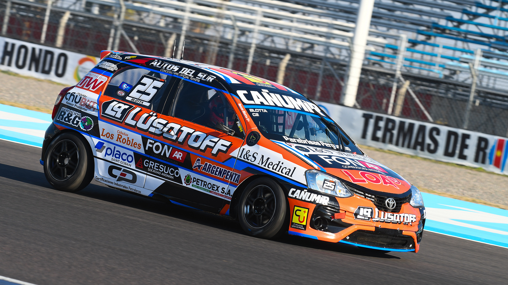

Renzo Blotta vuelve a la acción este fin de semana

El piloto comodorense disputará una nueva fecha del Turismo Nacional los días 1, 2 y 3 de agosto en la ciudad de Oberá. Blotta llega a la fecha número 8 del campeonato de la Clase 2 ubicado en la 6ª posición de la tabla general, a 44 puntos del líder, Francisco Coltrinari.
El piloto chubutense, quien ya cuenta con una victoria en esta temporada, busca tener una buena actuación para volver a sumar fuerte en el campeonato.
Oberá es un circuito con un trazado de 4245 metros. En la última visita de la categoría a este escenario, el vencedor en la Clase 2 fue Antolín.
Cuenta Vueltas 77 – 29 de julio de 2025